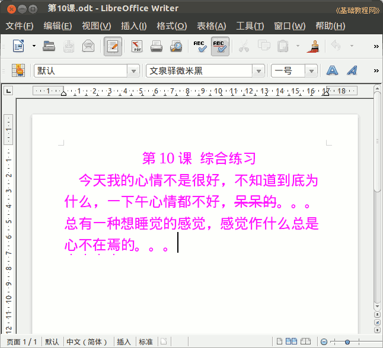

2011-2012 第二学期七年级文字处理和网页教学设计
作者：TeliuTe 来源：基础教程网
十、综合练习 返回目录 下一课
（一）教学设计
1、学习目标：综合练习一下，复习前面学过的知识。
2、注意事项：把学过的知识点都过一遍。
3、教学过程：
1）教师准备学案和板书；
2）学生整队进入，开机抄黑板上笔记；
3）教师讲解板书演示操作；
4）学生打指法、日志、完成操作；
5）教师打勾记录学生指法成绩，检查日志和操作；
注：学生抄完笔记就开始打指法、日志，老师讲完后再继续完成；
（二）板书设计(学生笔记)
第10课 综合练习
写一篇50字的小短文，要求字体、颜色、产首行缩进、对齐、行间距、删除线、着重号
保存为第10课
操作图示：

（三）课后记
学了好久，需要巩固和检测一下
设计一篇综合练习，把前面的运用一下
--
3班还好这阵感觉慢慢有起色，说了几次强调要求一下
或者也许是班主任抓纪律了，学生抓一抓就好的多
--
上午照着关闭站点的方法，设计了一个关闭农场的全局变量
这样上课之前可以先收心学习，提前要求一下
--
2班反而学得有些吃力了，前面想着挺好的
没想到差生在后面拖着终于超过平衡，整个氛围变得浮躁
--
一节课光去解决问题了，脑瓜里碰到什么都问
而且是那种无意识的重复问，下节课挑一下是哪些学生在耽误
--
下一个班关闭农场，进来之前说一下好多了
另一个还是有些卡，重新进去让关一下别的好了
--
说话和吵的都敲一下脑袋，这样要好一些
下回也好有个记忆的，不是特别细致
--
把一些太慢的放松一下，盯上一会就不再操心
一直盯着出不了多少成绩，费大量的时间耽误别的同学
--
机子控制好，对着黑板讲一下，短文写一件事，今天发生的事情，
或者写自己喜欢的人或物，以前写过类似的短文，让回顾一下
--
删除线是错别字或者不喜欢的句子，着重号是最重要、喜欢、精彩的
讲完自己练习，时间挺充足的，日志写“我学会了”就拿这个当题目也行
返回目录 下一课
本教程由86团学校TeliuTe制作|著作权所有
基础教程网：http://teliute.org/
美丽的校园……
转载和引用本站内容，请保留作者和本站链接。